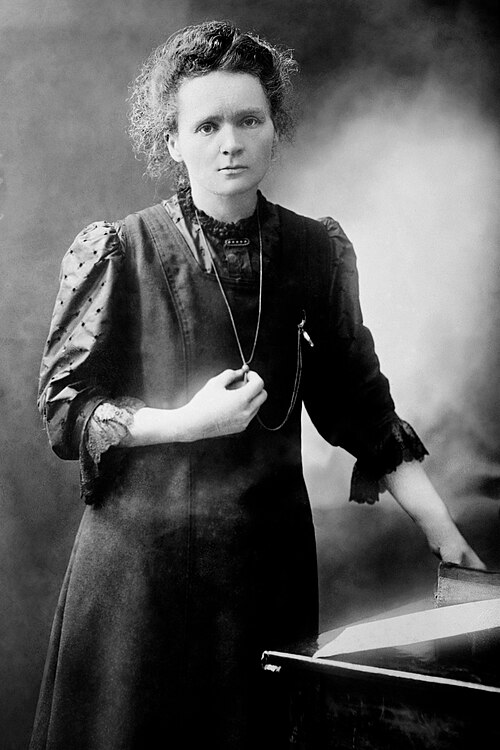
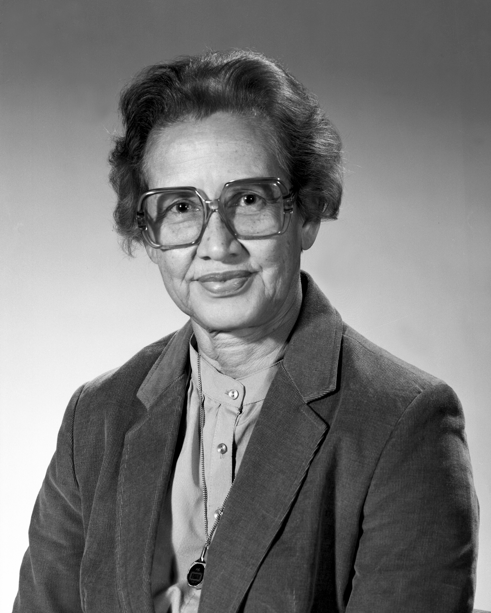
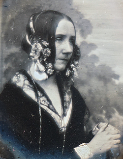
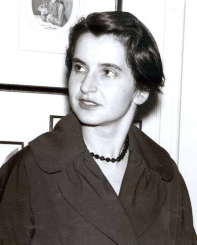
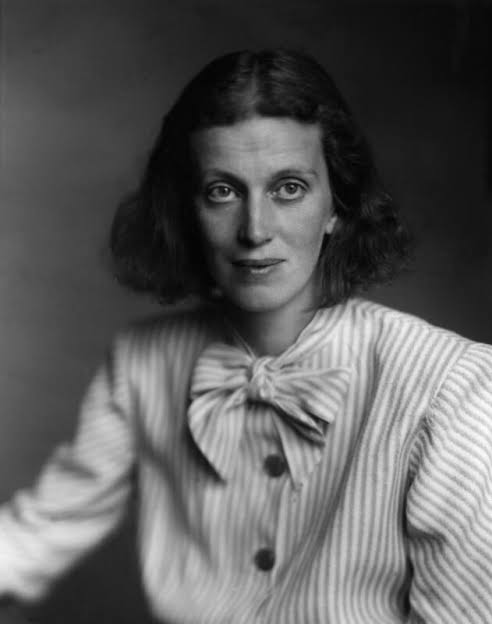
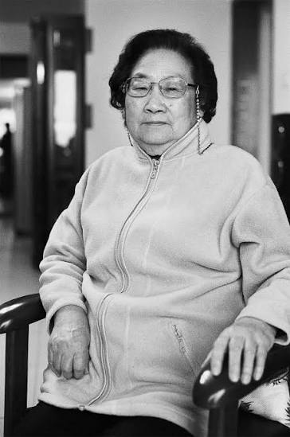
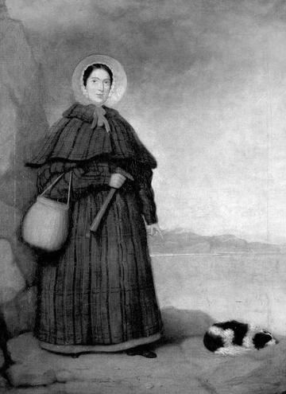
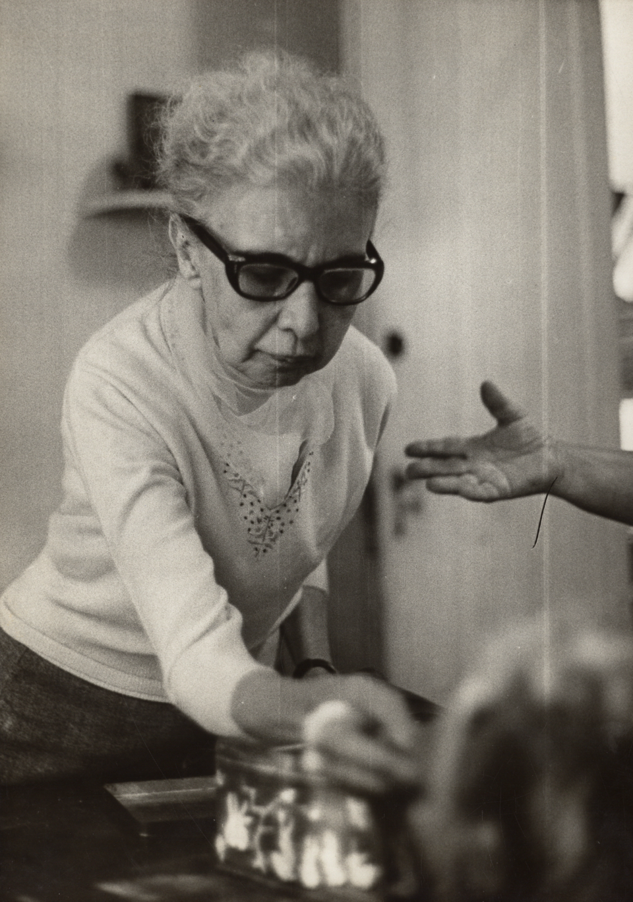
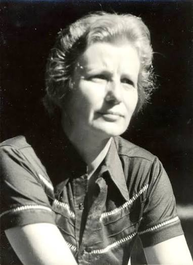

Marie Curie
Física e Química
Desenvolveu pesquisas fundamentais sobre radioatividade e participou da descoberta dos elementos polônio e rádio.
Conhecer trajetória →Mulheres que transformaram diferentes áreas do conhecimento
Conheça mulheres que contribuíram para a física, química, matemática, computação, medicina, biologia, astronomia, agronomia e diversas outras áreas da ciência.

Física e Química
Desenvolveu pesquisas fundamentais sobre radioatividade e participou da descoberta dos elementos polônio e rádio.
Conhecer trajetória →
Matemática e Física
Realizou cálculos fundamentais para missões espaciais da NASA e para o desenvolvimento da exploração espacial.
Conhecer trajetória →
Matemática e Computação
Escreveu um dos primeiros algoritmos destinados a serem processados por uma máquina.
Conhecer trajetória →
Química e Biologia
Produziu imagens de difração de raios X fundamentais para a compreensão da estrutura do DNA.
Conhecer trajetória →
Química
Utilizou cristalografia de raios X para determinar estruturas de moléculas como penicilina, vitamina B12 e insulina.
Conhecer trajetória →
Farmacologia e Medicina
Liderou pesquisas que resultaram na descoberta da artemisinina, medicamento fundamental contra a malária.
Conhecer trajetória →Tecnologia e Engenharia
Desenvolveu com George Antheil um sistema de salto de frequência importante para a evolução das comunicações sem fio.
Conhecer trajetória →
Paleontologia
Descobriu fósseis importantes de animais marinhos pré-históricos e contribuiu para o desenvolvimento da paleontologia.
Conhecer trajetória →
Física
Realizou experimentos decisivos em física nuclear, incluindo pesquisas fundamentais sobre a conservação da paridade.
Conhecer trajetória →Química e Engenharia
Desenvolveu a evolução dirigida de enzimas, técnica aplicada em medicamentos, combustíveis e processos industriais.
Conhecer trajetória →
Medicina e Psiquiatria
Defendeu tratamentos psiquiátricos mais humanizados e valorizou atividades artísticas como parte da terapia.
Conhecer trajetória →
Agronomia e Biologia
Pesquisou bactérias fixadoras de nitrogênio e contribuiu para reduzir o uso de fertilizantes na agricultura brasileira.
Conhecer trajetória →